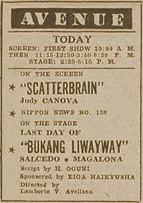

|
j
a v a s c r i p t |
March 22, 1943

Avenue Ad
I went to see Oguni's 'Bukang Liwayway' [Break of Dawn] play on its last showing at an overheated Avenue Theater. The crowd applauded three times at the Filipino performances, particularly Salcedo's. The bozo that clapped vigorously at one point and drew only scattered support turned out to be Japanese. There was much snickering, and the lady behind me muttered Susmariaosep [Jesus-Mary-Joseph] no less than fifty times during the hour-long play. |
|
|
|
|